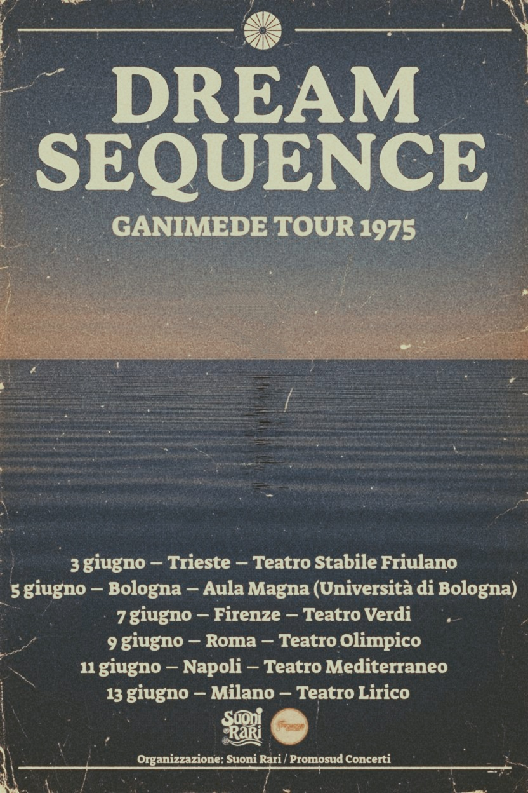

Live Signals
Transmission Archive • 1973 - 1981

New York
Beacon Theatre• March 25, 1978

Italian Transmissions
Trieste • Bologna • Firenze • Roma • Napoli • Milano • June 1975

Scandinavia
Copenhagen • Stockholm • Oslo • 1975

Benelux Cycle
Amsterdam • Utrecht • Rotterdam • Ghent • Antwerp • Brussels • Jan/Feb 1976

Ljubljana
Kud France Prešeren • Feb 05, 1976

Lusitania Resonance
Porto • Lisboa • Coimbra • 1976

European Axis
Trieste • Munich • Berlin • Paris • London • Jan 1977

Iberia & Italia
Madrid • Barcelona • Milano • Bologna • Oct 1977

North America Arc
Toronto • Montreal • Boston • New York • 1978

Japan Arc
Tokyo • Yokohama • Kyoto • Osaka • Oct 1980

Barcelona
Escola Massana • Oct 1, 1977
Archive Status
Confirmed signal coordinates tracked across European and North American arcs during the experimental cycle.
Recovered magnetic tape archives currently undergoing high-fidelity digital transformation and harmonic stabilization.
Calculated fidelity of recovered transmissions after noise-floor reduction and analog warmth preservation protocols.